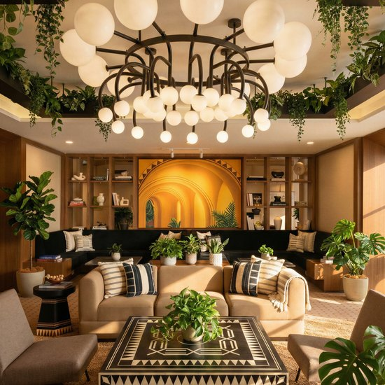

You’ve used your free creations. Keep discovering new opportunities with credits

The free feed stops at ten cards a day. Pro opens the full feed, one column per sector, and unlocks Signals: your customer data read as who to talk to next, with the journey already drafted.
We’ll reach out to you on WhatsApp so you can stay in touch and move faster. Our team will get back to you in 12 to 24 hours to help.
Top up your credits to continue creating, analyzing, and running work in ShopOS.
Choose what you want ShopOS to spend more or less time on.
Drop in a shoot, a spreadsheet, a brand deck or a screenshot. The agents read it and decide what to do with it.
Once it is in, you decide what it becomes.
Your core team is ready to work across catalog, creative, performance, visibility, storefront and customers.
Need something more specific? Create custom agents for the workflows, roles or tasks unique to your brand.